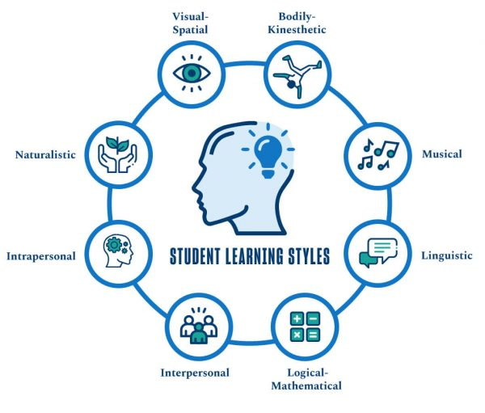

Different Methods for Ongoing Learning

Learning Should Never End
Many of us have once believed that once you have completed school in some fashion (getting your GED, graduating high school, obtaining a college degree) that we are done learning and it is not beneficial in any way to continue our education. Maybe you hated school, the teachers, being in a classroom setting, or anything like that. We all learn in different ways and have circumstances that stop us from learning more. Well the great thing about the times that we live in now, we can expand our knowledge and continue to learn, all without having to go back and do formal schooling (and potentially having a loan out or paying money out of pocket.
As we age, our mind ages as well. That is why we need to constantly be learning, to keep our mind sharp. Like we have to focus on our health - by eating better, exercising more, and focusing on our mental health - our mind needs to learn to be healthy. There are many ways to do this and I will list some of them. There are learning websites that you can access for free with a library card. Going through a structured learning course on a given topic or reading anything we can find on a specific subject.
How often do you find yourself as a passenger in a car or at home after a long day of work, scrolling through some form of social media, feeling rather bored and blah? We know that nothing stimulating can be found in these platforms. So why not take 10 minutes out of your day to do something different and stimulate your mind with brain-training apps. Now there is no strong supporting evidence to prove that some of these high tooting apps really do what they say Brain Training Apps, but it is better to do something with your mind, rather then nothing. You can learn a new language for ~10 min a day by going on Duolingo, which is also a free app. You can also find Brain Games - improve your brain power. Sudoku is a great app as well.
Do you find yourself wanting to get back into reading after you have had a drop off from it? I know I am one of those people and would love to get back into it. Reading any subject, or just a novel is great for your mind as you are imagining those things in your head. You may be able to retain more of that information if you prefer to listen to someone. Audio books and even podcasts are great for that. You can find pretty much any topic that you have an interest in for both audiobooks and podcasts. These are great for listening to when on a bus ride, or out for a walk. I have been known to listen to a number of audiobooks and podcasts when working, at my office job that allows for that. If you have a friend who likes the same topics as you, you can both listen to and discuss it later! That’s two minds benefiting! Spotify, Pandora, and Audible are great apps for both. I have a link below for an article that talks about the benefits of reading. Benefits of Reading Books
I just want to put a quick note here that learning can be anything. Do you want to learn how to sew, woodwork, or make a number of other things? Making is a great way to learn as well and are very valuable skills, as a lot of them are dying out. This also includes getting certified in trade jobs. You can go to a local community college and take that path. For those wanting to gain certifications by learning something new, or wanting to change a career path there are so many beneficial resources out there. I have been focusing on a career change as well, because I know that my job is a dead-end job, unless I change departments. So I am spending as many hours a week and weekend to learn what I can to help get me out of the current field I am in. I highly recommend going to your local library and getting a library card to access what free resources they have available. I have provided some of the Colorado Learning information that I was able to find. You can find them below. I have also provided any information I could find on trade schools or certification within the state of Colorado.
Whether you want to keep your brain active on lunch breaks or after work, or you want to take another route, continue with self learning and change your career path, you can do it! It is all at the tip of your fingers. Go out and learn!